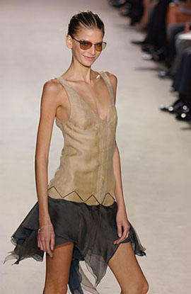
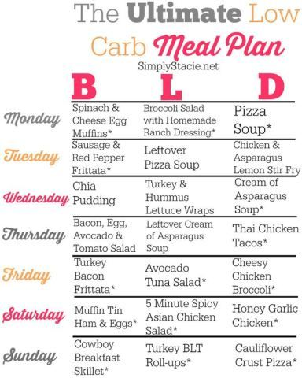
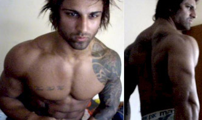

7 Things to Know About the 500-Calorie Diet
2021.06.21 13:19
Subscribe
7 Things to Know About the 500-Calorie Diet
Medically reviewed by Natalie Butler, R.D., L.D. — Written by Elea Carey — Updated on September 17, 2018 Don’t do it alone 5:2 diet plan How much is 500 calories? Nutrition needs Deficiency dangers Muscle loss Metabolic changes Takeaway Share on PinterestVery low-calorie diets
A 500-calorie diet is an extreme form of a very low-calorie diet (VLCD). It requires you to drastically reduce the amount of food you eat, usually to a maximum of 800 calories per day.
VLCDs use meal replacements like drinks, shakes, and prepared food bars instead of meals for at least two meals a day. VLCDs are meant for people who are very overweight and have been unable to lose weight after trying many diet plans.
This diet can be dangerous and requires medical supervision. Read on to learn more about the risks and goals of the 500-calorie diet.
1. Don’t do it alone
A doctor will prescribe a 500-calorie diet if he or she has decided that it’s critical for you to lose weight. They do this by weighing your general health concerns against the risks and potential complications of drastic calorie reduction.
If your doctor hasn’t recommended a 500-calorie diet, you should not try this diet. A diet like this has risks and precautions associated with it. A doctor should supervise you while on this diet.
2. The 5:2 diet plan
Some people use a 500-calorie diet as part of the recently popularized 5:2 intermittent diet plan. Under this plan, you eat a balanced Mediterranean-style diet of about 2000 calories for five days of the week and then limit yourself to 500 low-carbohydrate calories per day for the other two days. The two “fasting” days are usually nonconsecutive.
There is very little evidence to support the benefits of 5:2 intermittent dieting over daily calorie reduction.
3. How much is 500 calories?
You can get an idea of how much (or how little) 500 calories is when you consider the calorie count of popular foods. The USDA calculates that two handfuls of peanuts or a slice of pepperoni pizza contains about 250 calories. An apple contains fewer than 80 calories, while two pieces of fried chicken contain about 400 calories.
You might also want to consider how many calories you burn in a day. According to the Harvard Medical School , a 185-pound person burns 72 calories by just sitting in a one-hour meeting.
4. You still need nutrition
One of the problems with a 500-calorie diet is that it places no limits on the fats and carbohydrates you consume. A serving of chocolate pound cake and a glass of milk adds up to about 500 calories. However, that so-called meal doesn’t even come close to giving you the nutrients you need, even if you’re just sitting in a meeting.
Regardless of calorie count, a well-rounded diet includes fruits and vegetables, lean proteins, and whole grains. Being healthy is about a lot more than just a number.
Share on Pinterest
5. Danger of deficiencies
The greatest dangers associated with a 500-calorie diet relate to vitamin and mineral deficiencies. Vitamin and mineral deficiencies can lead to many health problems. In fact, most people cannot meet their vitamin and mineral requirements if they eat less than 1200 calories per day.
For example, according to the Mayo Clinic , if your diet lacks the mineral zinc , which is in pumpkin seeds and beef, you can suffer hair loss.
Low iron intake can lead to anemia , while chronic low intake of calcium and vitamin D can lead to osteoporosis later in life. If you don’t get enough of the vitamin niacin, found in tuna and dates, you could be at risk for heart attack due to clogged arteries. Always consider the full nutritional makeup of the foods you eat, not just their calories.
6. Muscle loss
A 500-calorie diet can also put you at danger for muscle loss . Sharon Palmer, R.D., dietitian and author of “Plant-Powered for Life,” points out, “Once your body has consumed your fat reserves, it begins to burn healthy muscle.”
At first, muscle loss may seem like you are losing more weight, but keep in mind that not all weight is bad. To keep your body healthy, you need to be able to build muscles. A healthy diet burns fat, not muscle.
7. Metabolic changes
Another health risk to keep in mind when considering a 500-calorie diet is that your metabolism will change when you reduce the amount of calories you eat for a long enough period of time. Severe calorie restriction for prolonged periods of time will lead to a slower metabolism. This can lead you to burn fewer calories. Also, when you lose weight, you then need fewer calories to maintain your new weight than you needed for your original weight.
Dr. Mindy Haar, Ph.D., R.D., C.D.N., of the New York Institute of Technology School of Health Professions, says, “Many people think that they can stick with a diet for the short term, lose the weight, and then go back to eating the way they were before. But if they do so, they will regain weight until they reach their original weight.” Oftentimes people lose both fat and lean mass but regain primarily fat, which is how diets can wind up making us fatter in the long run.
The takeaway
You should only conduct a 500-calorie diet under a doctor’s close supervision. Though you may lose weight, you are at risk of malnutrition , which can cause many health problems. Healthy weight loss includes getting a variety of nutrients from varied food sources, limiting food portions, and burning more calories than you eat. Stick to that approach to get the pounds off and keep them off.
Last medically reviewed on August 18, 2016
Medically reviewed by Natalie Butler, R.D., L.D. — Written by Elea Carey — Updated on September 17, 2018Read this next
The Beginner's Guide to the 5:2 Diet Written by Adda Bjarnadottir, MS, RDN (Ice)This is a detailed beginner's guide to the 5:2 diet, also called the Fast diet. This diet is very effective to lose weight and improve health.
READ MORE The Military Diet: A Beginner’s Guide (With a Meal Plan) Written by Joe Leech, MSThis is a detailed beginner's guide to the military diet, also called the 3-day diet. The military diet is claimed to help you lose weight very…
READ MORE A Ketogenic Diet to Lose Weight and Fight Metabolic Disease Written by Rudy Mawer, MSc, CISSNA ketogenic diet has been proven to help you lose weight and fight metabolic disease. Here’s an evidence-based look at how it works.
READ MORE The 11 Most Nutrient-Dense Foods on the Planet Written by Kris Gunnars, BScFor optimal health, it is a good idea to choose the foods that contain the most nutrients. Here are the 11 most nutrient dense foods on earth.
READ MORE 5 Studies on the Mediterranean Diet — Does it Work? Written by Kris Gunnars, BScThis review of five human studies on the Mediterranean diet examines its effects on weight loss, various diseases, and the risk of death.
READ MORE 23 Studies on Low Carb and Low Fat Diets — Time to Retire the Fad Written by Kris Gunnars, BScOver 20 studies have compared low carb and low fat diets. Low carb diets consistently lead to better results, both for weight loss and common risk…
READ MORE Bland Diet: What to Eat and What to Avoid Medically reviewed by Natalie Butler, R.D., L.D.Whether you're dealing with a bout of food poisoning or an ongoing gastrointestinal condition, eating a bland diet can help ease your symptoms. Here's…
READ MORE Some Like It Hot: 5 Reasons Spicy Food Is Good for You Medically reviewed by Natalie Butler, R.D., L.D.Spicy food isn’t just exciting — it's also in your health's best interest. Here’s why the world of science recommends you turn up the heat on your…
READ MORE The Best 12 Healthy Eating Books of the YearFor expert advice on how to eat healthier and get the nutrients you need, check out these top healthy eating books.
READ MORE Why Unvaccinated People Are Still at High Risk of COVID-19 this SummerExperts say the spread of the COVID-19 delta variant increases the odds of an unvaccinated person developing COVID-19 this summer
READ MORE About Us Newsletters Health Topics Find an Online Doctor Contact Us Advertising Policy Privacy Policy Privacy Settings © 2005-2021 Healthline Media a Red Ventures Company. All rights reserved. Our website services, content, and products are for informational purposes only. Healthline Media does not provide medical advice, diagnosis, or treatment. See additional information . © 2005-2021 Healthline Media a Red Ventures Company. All rights reserved. Our website services, content, and products are for informational purposes only. Healthline Media does not provide medical advice, diagnosis, or treatment. See additional information . About Careers Advertise with usOUR BRANDS
Healthline Medical News Today Greatist Psych Central- Very Low-Calorie Protein Diet to Lose Weight Fast
- Very Low Calorie Diet - an overview | ScienceDirect Topics
- 7 Things to Know About the 500-Calorie Diet - Healthline
- Very Low-Calorie Diet: Pros, Cons, and What You Can Eat
- Very low calorie diets - NHS
- Diet for rapid weight loss: MedlinePlus Medical Encyclopedia
- Aggressive, Non-Surgical, Medical Weight Loss Using Very .
- How to: 800 calories a day diet | The Fast 800
- Fast 800 Calorie Diet explained with recipes for breakfast .
- VLCD Benefits of Very Low Calorie Diet Plans -Slim&Save .
- Very Low-Calorie Protein Diet to Lose Weight Fast
- Very Low Calorie Diet - an overview | ScienceDirect Topics
- 7 Things to Know About the 500-Calorie Diet - Healthline
- Very Low-Calorie Diet: Pros, Cons, and What You Can Eat
- Very low calorie diets - NHS
- Diet for rapid weight loss: MedlinePlus Medical Encyclopedia
- Aggressive, Non-Surgical, Medical Weight Loss Using Very .
- How to: 800 calories a day diet | The Fast 800
- Fast 800 Calorie Diet explained with recipes for breakfast .
- VLCD Benefits of Very Low Calorie Diet Plans -Slim&Save .
  